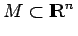
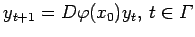
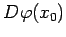
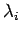
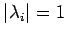
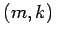
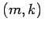

Inhalt Index DeskTop Bronstein

 Dynamische Systeme und Chaos Gewöhnliche Differentialgleichungen und Abbildungen Zeitdiskrete dynamische Systeme Ruhelagen, periodische Orbits und Grenzmengen
Dynamische Systeme und Chaos Gewöhnliche Differentialgleichungen und Abbildungen Zeitdiskrete dynamische Systeme Ruhelagen, periodische Orbits und Grenzmengen


Es sei x0 eine Ruhelage von (17.3) mit . Das lokale Verhalten der Iteration (17.3) nahe x0 wird, unter gewissen Voraussetzungen, durch die Variationsgleichung  bestimmt. Besitzt  keinen Eigenwert  mit , so heißt die Ruhelage  , analog zum Differentialgleichungfall, hyperbolisch. Die hyperbolische Ruhelage x0 ist vom Typ , wenn Df(x0) genau m Eigenwerte innerhalb und k = n - m Eigenwerte außerhalb des komplexen Einheitskreises besitzt. Die hyperbolische Ruhelage vom Typ (m,k) heißt für m = n Senke, für k = n Quelle und für m > 0 und k > 0 Sattel.
, analog zum Differentialgleichungfall, hyperbolisch. Die hyperbolische Ruhelage x0 ist vom Typ , wenn Df(x0) genau m Eigenwerte innerhalb und k = n - m Eigenwerte außerhalb des komplexen Einheitskreises besitzt. Die hyperbolische Ruhelage vom Typ (m,k) heißt für m = n Senke, für k = n Quelle und für m > 0 und k > 0 Sattel.
Es gilt der folgende
Satz über Stabilität in der ersten Näherung für zeitdiskrete dynamische Systeme: Eine Senke ist asymptotisch stabil; Quellen und Sattel sind instabil.